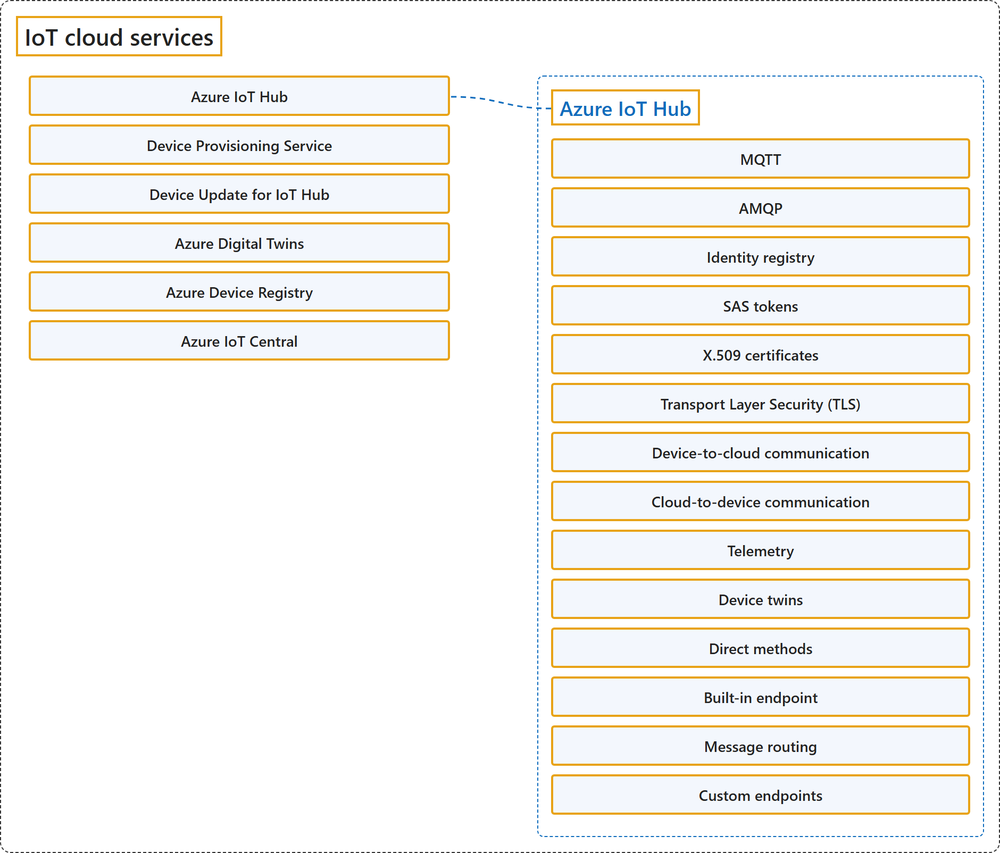

12.2 IoT Cloud Services
Classification

Glossary
| Term | Definition | 中文翻译 | Source |
|---|---|---|---|
| Azure IoT Hub Azure IoT 中心 |
"Azure IoT Hub is a managed service that acts as a central message hub in a cloud-based IoT solution." | Azure IoT 中心是一项托管服务，充当基于云的 IoT 解决方案中的中央消息中心。 | Microsoft, 2026c, para. 2 |
| MQTT MQTT |
"They might need to use proprietary, custom, or industry-specific application protocols, such as MQTT or AMQP." (context) | 它们可能需要使用专有、自定义或行业特定的应用程序协议，例如 MQTT 或 AMQP。（上下文） | Microsoft, 2026c, "Understand IoT devices" section, item 6 |
| AMQP AMQP |
"They might need to use proprietary, custom, or industry-specific application protocols, such as MQTT or AMQP." (context) | 它们可能需要使用专有、自定义或行业特定的应用程序协议，例如 MQTT 或 AMQP。（上下文） | Microsoft, 2026c, "Understand IoT devices" section, item 6 |
| Identity registry 标识注册表 |
"Every IoT hub has an identity registry that stores information about the devices and modules permitted to connect to it." | 每个 IoT 中心都有一个标识注册表，用于存储设备和模块的信息，这些设备和模块获准连接到该中心。 | Microsoft, 2026c, "Connect and authenticate devices" section, para. 1 |
| SAS tokens SAS 令牌 |
"SAS tokens authenticate each device call to IoT Hub using a symmetric key." | SAS 令牌使用对称密钥对发往 IoT 中心的每次设备调用进行身份验证。 | Microsoft, 2026c, "Connect and authenticate devices" section, para. 2, item 1 |
| X.509 certificates X.509 证书 |
"X.509 certificates authenticate devices during Transport Layer Security (TLS) connections." | X.509 证书在传输层安全性 (TLS) 连接期间对设备进行身份验证。 | Microsoft, 2026c, "Connect and authenticate devices" section, para. 2, item 2 |
| Transport Layer Security (TLS) 传输层安全性 (TLS) |
"The internet connection between the IoT device and IoT Hub is secured by using the Transport Layer Security (TLS) standard." (context) | IoT 设备与 IoT 中心之间的 Internet 连接通过传输层安全性 (TLS) 标准加以保护。（上下文） | Microsoft, 2026c, "Device communication patterns" section, para. 1 |
| Device-to-cloud communication 设备到云通信 |
"By using IoT Hub, you can send information both from the device app to your cloud services and from your cloud services to the device app." (context) | 使用 IoT 中心，你可以发送信息，既能从设备应用发送到云服务，也能从云服务发送到设备应用。（上下文） | Microsoft, 2026c, "Device communication patterns" section, para. 2 |
| Cloud-to-device communication 云到设备通信 |
"By using IoT Hub, you can send information both from the device app to your cloud services and from your cloud services to the device app." (context) | 使用 IoT 中心，你可以发送信息，既能从设备应用发送到云服务，也能从云服务发送到设备应用。（上下文） | Microsoft, 2026c, "Device communication patterns" section, para. 2 |
| Telemetry 遥测 |
"IoT hubs can receive telemetry from devices and route it to the appropriate cloud services." (context) | IoT 中心可以从设备接收遥测数据，并把它路由到相应的云服务。（上下文） | Microsoft, 2026c, "Send telemetry from devices" section, para. 1 |
| Device twins 设备孪生 |
"You can enable properties in IoT Hub using Device twins or Plug and Play." (context) | 你可以使用设备孪生或即插即用在 IoT 中心中启用属性。（上下文） | Microsoft, 2026c, "Add device properties" section, para. 2 |
| Direct methods 直接方法 |
"Direct methods represent a request-reply interaction with a device similar to an HTTP call in that they succeed or fail immediately (after a user-specified time-out)." | 直接方法表示与设备的请求-答复交互，类似于 HTTP 调用，因为它们会立即成功或失败，时限为用户指定的超时。 | Microsoft, 2026c, "Issue commands to devices" section, para. 1 |
| Built-in endpoint 内置终结点 |
"A built-in endpoint collects data from your device by default. The data is collected by using a request-response pattern over dedicated IoT device endpoints, retained for up to seven days, and used to take actions on a device." | 内置终结点默认收集来自设备的数据。这些数据通过专用 IoT 设备终结点上的请求-响应模式收集，最多保留七天，并用于对设备执行操作。 | Microsoft, 2026c, "Built-in endpoint collects device data by default" section, para. 1 |
| Message routing 消息路由 |
"You can route data to different services for further processing." (context) | 你可以把数据路由到不同的服务进行进一步处理。（上下文） | Microsoft, 2026c, "Message routing sends data to other endpoints" section, para. 1 |
| Custom endpoints 自定义终结点 |
"IoT Hub supports setting up custom endpoints for Azure services including Storage containers, Event Hubs, Service Bus queues, Service Bus topics, and Cosmos DB." | IoT 中心支持为 Azure 服务设置自定义终结点，包括存储容器、事件中心、服务总线队列、服务总线主题和 Cosmos DB。 | Microsoft, 2026c, "Message routing sends data to other endpoints" section, para. 2 |
| Device Provisioning Service 设备预配服务 |
"The IoT Hub Device Provisioning Service (DPS) is a helper service for IoT Hub that enables zero-touch, just-in-time provisioning to the right IoT hub without requiring human intervention." | IoT 中心设备预配服务 (DPS) 是 IoT 中心的帮助程序服务，能够实现零接触、实时的预配，把设备预配到正确的 IoT 中心，无需人工干预。 | Microsoft, 2026b, para. 1 |
| Device Update for IoT Hub IoT 中心设备更新 |
"Device Update for IoT Hub is a service that enables you to deploy over-the-air updates for your IoT devices in a cloud-based IoT solution." | IoT 中心设备更新是一项服务，让你可以在基于云的 IoT 解决方案中部署无线 (OTA) 更新，对象是 IoT 设备。 | Microsoft, 2026d, para. 2 |
| Azure Digital Twins Azure 数字孪生 |
"Azure Digital Twins is a platform as a service (PaaS) offering that enables the creation of twin graphs based on digital models of entire environments, which could be buildings, factories, farms, energy networks, railways, stadiums, and more—even entire cities." | Azure 数字孪生是一种平台即服务 (PaaS) 产品，它支持基于整个环境的数字模型创建孪生图，这些环境可以是建筑、工厂、农场、能源网络、铁路、体育场等，甚至是整座城市。 | Microsoft, 2025a, para. 1 |
| Azure Device Registry Azure 设备注册表 |
"Azure Device Registry is a cloud service that works with both IoT Hub and Azure IoT Operations to provide a unified view of your devices and industrial assets as standard Azure resources." | Azure 设备注册表是一项云服务，它同时与 IoT 中心和 Azure IoT Operations 配合，以标准 Azure 资源的形式提供设备和工业资产的统一视图。 | Microsoft, 2026a, "Azure Device Registry" section, para. 1 |
| Azure IoT Central Azure IoT Central |
"IoT Central is an application platform as a service (aPaaS) that reduces the burden and cost of developing, managing, and maintaining cloud-based IoT solutions." | IoT Central 是一种应用程序平台即服务 (aPaaS)，它降低了开发、管理和维护基于云的 IoT 解决方案的负担和成本。 | Microsoft, 2025b, para. 1 |
References
- Microsoft. (2025a, January 28). What is Azure Digital Twins? Microsoft Learn. https://learn.microsoft.com/en-us/azure/digital-twins/overview
- Microsoft. (2025b, May 9). What is Azure IoT Central? Microsoft Learn. https://learn.microsoft.com/en-us/azure/iot-central/core/overview-iot-central
- Microsoft. (2026a, April 15). What is Azure Internet of Things (IoT)? Microsoft Learn. https://learn.microsoft.com/en-us/azure/iot/iot-introduction
- Microsoft. (2026b, January 22). What is Azure IoT Hub Device Provisioning Service? Microsoft Learn. https://learn.microsoft.com/en-us/azure/iot-dps/about-iot-dps
- Microsoft. (2026c, May 21). What is Azure IoT Hub? Microsoft Learn. https://learn.microsoft.com/en-us/azure/iot-hub/iot-concepts-and-iot-hub
- Microsoft. (2026d, October 5). What is Device Update for IoT Hub? Microsoft Learn. https://learn.microsoft.com/en-us/azure/iot-hub-device-update/understand-device-update